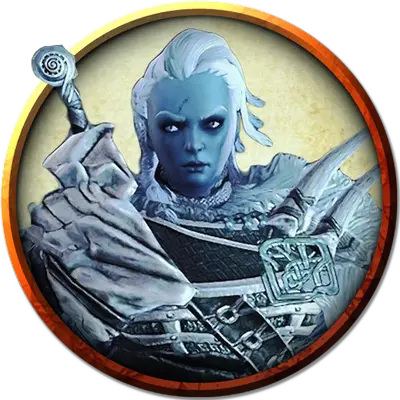

Друфи
Drufi
Огромный Великан (Женщина), нейтрально-злой, именной НИП

Класс Доспеха 15 (лоскутный доспех)
Хиты 138 (12к12 + 60)
Скорость 40 футов
| мод | спас | ||
|---|---|---|---|
| СИЛ | 23 | +6 | +6 |
| ЛОВ | 9 | −1 | −1 |
| ТЕЛ | 21 | +5 | +8 |
| мод | спас | ||
|---|---|---|---|
| ИНТ | 9 | −1 | −1 |
| МДР | 10 | +0 | +3 |
| ХАР | 12 | +1 | +4 |
Навыки Атлетика +9, Восприятие +3
Иммунитет к урону холод
Чувства пассивное Восприятие 13
Языки Великаний
Опасность 8 (3900 опыта)
Бонус мастерства +3
Особенности
Новые опции для великанов. Некоторые взрослые морозные великаны являются умелыми охотниками, они конструируют сеть нагруженные снизу фрагментами металла или костей. Эта способность представлена в виде следующих действий. (Storm King's Thunder)
Утяжелённая сеть. Дальнобойная атака оружием: +5 к попаданию, дистанция 20/60 фт., одно Маленькое, Среднее или Большое существо. Попадание: Цель опутана до тех пор, пока не выберется из сети. Любое существо может действием совершить проверку Силы Сл 17, чтобы освободится или освободить другое существо из сети, оканчивая эффект. Нанесение 15 рубящего урона по сети (КД 12) уничтожает сеть и освобождает цель.
Действия
Мультиатака. Друфи совершает две атаки секирой.
Секира. Рукопашная атака оружием: +9 к попаданию, досягаемость 10 футов, одна цель. Попадание: Рубящий урон 25 (3к12 + 6).
Камень. Дальнобойная атака оружием: +9 к попаданию, дистанция 60/240 футов, одна цель. Попадание: Дробящий урон 28 (4к10 + 6).
Описание
По приказу своего лорда Ярла Сторвальда, Друфи привела эту экспедицию, чтобы добыть кольцо.
Сторвальд хочет его по причинам, объяснённым в приключении «Гром Штормового Короля». Он полагает, что с Кольцом Зимы он может заморозить мир и вызвать Эпоху Вечного льда – замечательная мечта, которая держит Друфи сфокусированной на задаче. Гиганты ничего не знают о Ацерераке, Поглотителе душ или проклятии смерти.
Морозные гиганты находятся вне своей привычной среды обитания – в тропических джунглях. Они считают это худшим видом ада, которого только можно вообразить. Однако у них нет намерения подвести своего ярла и позволить Кольцу Зимы ускользнуть сквозь пальцы.